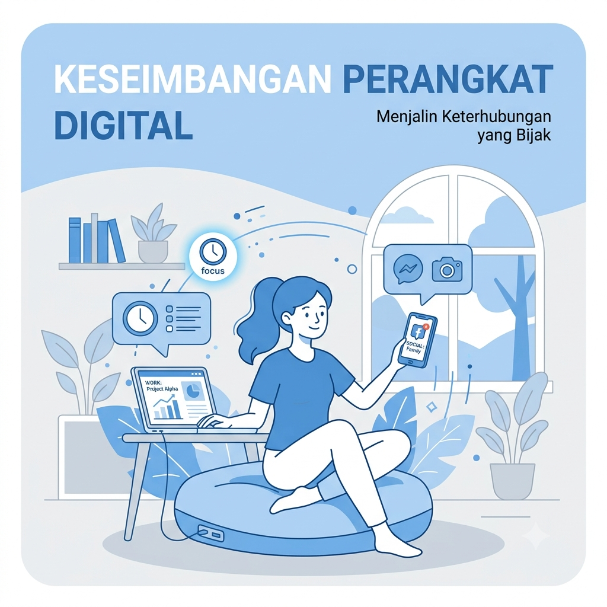
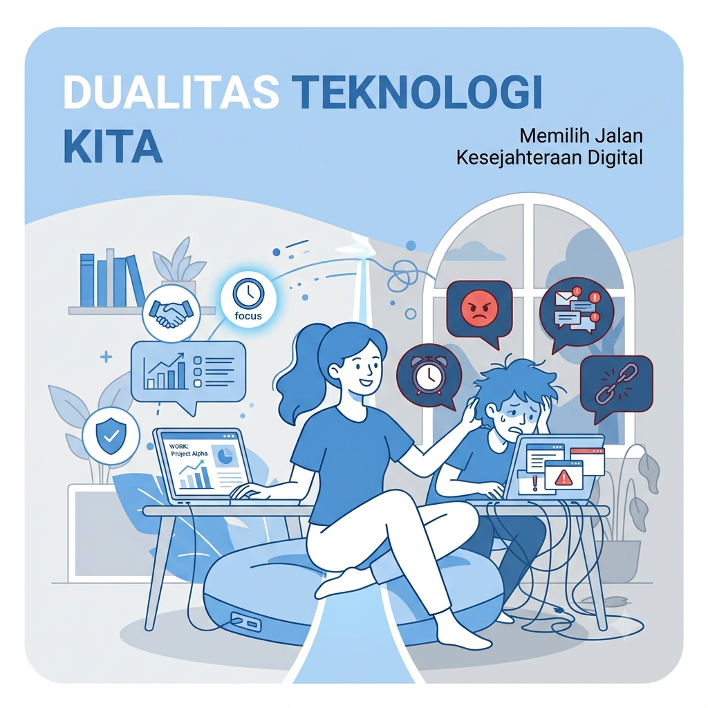
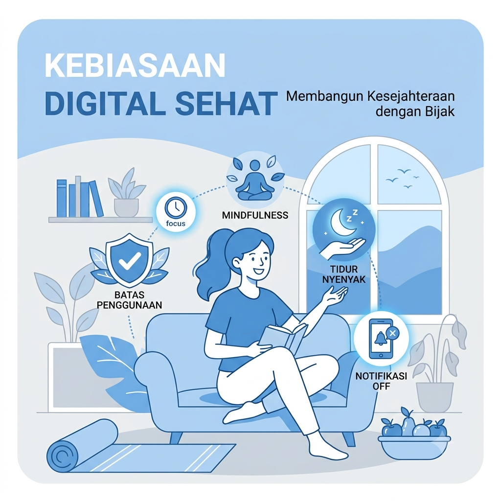
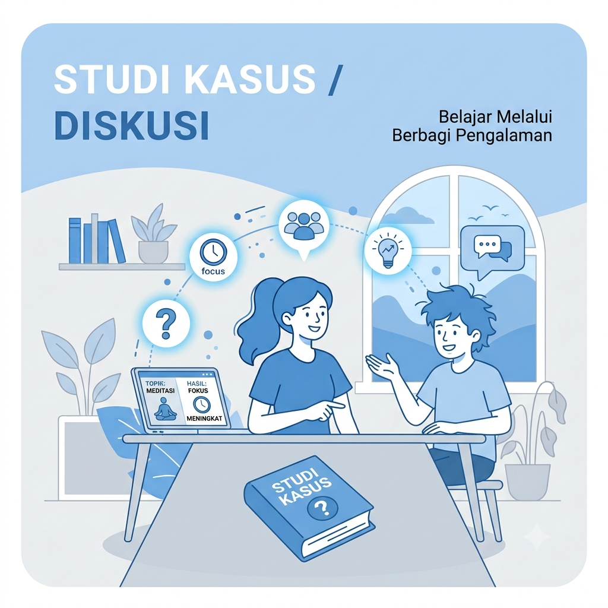

Pelajari bagaimana menggunakan teknologi secara sehat, aman, produktif, dan bertanggung jawab melalui empat modul pembelajaran yang disusun secara bertahap.
Pilih modul di bawah atau scroll ke materi yang ingin dipelajari.
Modul pertama membahas pengertian Digital Wellbeing, manfaat, tujuan, serta pentingnya menjaga keseimbangan antara penggunaan teknologi dengan kehidupan sehari-hari.

Digital Wellbeing adalah kemampuan seseorang dalam menggunakan teknologi digital secara sehat, seimbang, aman, serta bertanggung jawab sehingga mampu meningkatkan kualitas hidup tanpa mengganggu kesehatan fisik maupun mental.
Tonton video berikut untuk memperkuat pemahaman mengenai Digital Wellbeing.
Digital Wellbeing merupakan kemampuan menggunakan teknologi secara bijak agar tetap produktif, sehat, dan memiliki keseimbangan antara dunia digital dengan kehidupan nyata.
Menurut berbagai survei, rata-rata masyarakat Indonesia menghabiskan lebih dari 7 jam setiap hari menggunakan internet. Oleh karena itu, Digital Wellbeing menjadi salah satu keterampilan penting di era digital.
Pada modul ini mahasiswa akan mempelajari dampak positif dan negatif teknologi digital serta pentingnya menggunakan teknologi secara bijak agar memberikan manfaat dalam kehidupan sehari-hari.

Teknologi digital telah menjadi bagian penting dalam kehidupan modern. Berbagai aktivitas seperti belajar, bekerja, berkomunikasi, hingga berbelanja kini dapat dilakukan secara online dengan lebih mudah dan cepat.
Meskipun memberikan banyak manfaat, penggunaan teknologi yang berlebihan juga dapat menimbulkan berbagai masalah, seperti kecanduan gadget, berkurangnya interaksi sosial, gangguan tidur, hingga penyebaran informasi yang tidak benar. Oleh karena itu, diperlukan kemampuan Digital Wellbeing agar teknologi menjadi alat yang membantu, bukan mengendalikan kehidupan kita.
| Dampak Positif | Dampak Negatif |
|---|---|
| Mempermudah proses belajar melalui e-learning. | Kecanduan penggunaan smartphone. |
| Komunikasi menjadi lebih cepat dan efisien. | Interaksi sosial secara langsung berkurang. |
| Akses informasi menjadi lebih luas. | Penyebaran hoaks dan informasi palsu. |
| Meningkatkan produktivitas kerja. | Gangguan tidur akibat Screen Time berlebihan. |
| Membuka peluang bisnis digital. | Risiko kebocoran data pribadi. |
Teknologi digital memberikan manfaat yang besar apabila digunakan secara bijak. Sebaliknya, penggunaan yang berlebihan dapat berdampak pada kesehatan, produktivitas, serta hubungan sosial. Oleh karena itu, penting untuk menjaga keseimbangan dalam menggunakan teknologi.
Google mengembangkan fitur Digital Wellbeing pada Android untuk membantu pengguna memantau Screen Time, mengurangi gangguan notifikasi, serta membangun kebiasaan menggunakan perangkat digital secara lebih sehat.
Modul ini membahas berbagai kebiasaan sederhana yang dapat membantu menjaga keseimbangan antara aktivitas digital dan kehidupan sehari-hari.

Digital Wellbeing tidak hanya memahami manfaat dan risiko teknologi, tetapi juga menerapkan kebiasaan yang sehat dalam kehidupan sehari-hari. Kebiasaan kecil yang dilakukan secara konsisten akan membantu menjaga kesehatan fisik, mental, dan produktivitas.
Salah satu cara sederhana adalah mengatur Screen Time, mengurangi penggunaan gadget sebelum tidur, mengaktifkan Focus Mode saat belajar, serta menjaga keamanan akun digital dengan password yang kuat.
0 dari 6 kebiasaan dilakukan
Digital Wellbeing dapat dimulai dari kebiasaan kecil yang dilakukan secara konsisten. Penggunaan teknologi yang seimbang akan membantu menjaga kesehatan, produktivitas, serta kualitas hidup.
Google menyediakan fitur Digital Wellbeing yang membantu pengguna memantau Screen Time, Focus Mode, Sleep Mode, serta mengurangi gangguan notifikasi.
Terapkan seluruh materi yang telah dipelajari untuk menyelesaikan studi kasus berikut.

Andi adalah mahasiswa yang setiap hari menggunakan smartphone lebih dari 10 jam. Ia sering membuka media sosial saat kuliah, bermain game hingga larut malam, dan jarang beristirahat ketika menggunakan laptop. Akibatnya, nilai kuliah menurun, sulit berkonsentrasi, serta sering merasa lelah.
Digital Wellbeing bukan berarti berhenti menggunakan teknologi, melainkan menggunakan teknologi secara sehat, bijak, aman, dan seimbang agar mendukung aktivitas belajar maupun kehidupan sehari-hari.
Banyak smartphone modern telah menyediakan fitur Digital Wellbeing yang dapat membantu pengguna memantau Screen Time, mengurangi distraksi, serta membangun kebiasaan digital yang lebih sehat.
Kamu telah mempelajari seluruh materi Digital Wellbeing, mulai dari pengenalan konsep, dampak penggunaan teknologi, kebiasaan digital sehat, hingga penerapan melalui studi kasus.
Langkah selanjutnya adalah mencoba aktivitas pembelajaran dan mengerjakan evaluasi untuk mengetahui sejauh mana pemahamanmu terhadap materi.